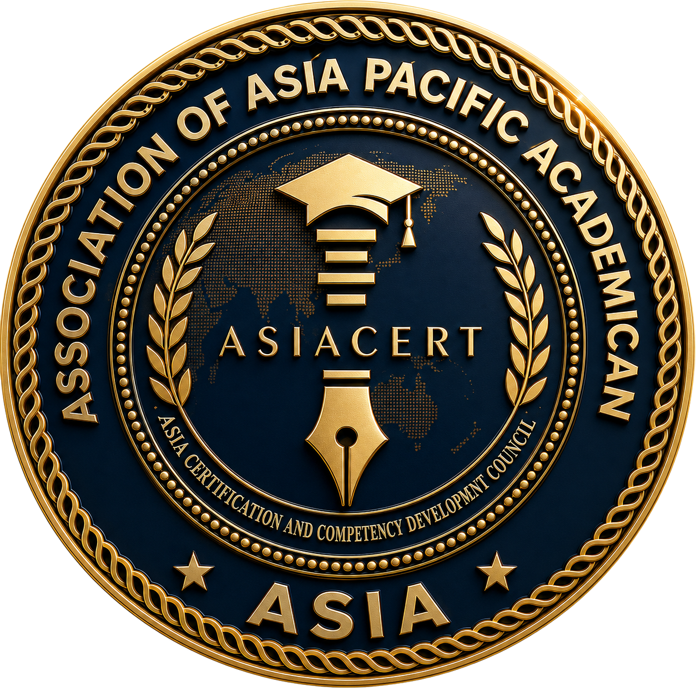

Asia Professional Certification Center
Certifying Competence. Empowering Professionals. Advancing Global Excellence.
The Asia Professional Certification Center (ASIACERT) is the official professional certification body of the Association of Asia Pacific Academician (ASIA). It serves as the principal institution responsible for designing, implementing, administering, and continuously improving competency-based professional certification systems across multidisciplinary academic and professional fields throughout the Asia-Pacific region.
ASIACERT was established to promote internationally recognized competency standards, strengthen professional qualifications, and enhance the global competitiveness of academics, professionals, institutions, industries, and public organizations.
Through transparent assessment processes, competency-based evaluation, digital credentialing, continuing professional development, and internationally benchmarked certification schemes, ASIACERT provides credible recognition of professional competence while supporting lifelong learning and workforce excellence.
Operating under the governance of the Board of Certification (BOC), ASIACERT ensures that every certification program is conducted with integrity, impartiality, transparency, quality assurance, and international best practices.
"To become the leading multidisciplinary professional certification center in the Asia-Pacific region, providing internationally recognized certification systems that strengthen professional competence, lifelong learning, and global workforce excellence."
ASIACERT is committed to:
Providing internationally benchmarked recognition of professional skills, knowledge, and ethical conduct.
Implementing reliable, transparent, and multi-method competency assessment systems to evaluate candidate performance.
Enhancing the visibility, credibility, and value of certified professionals in the global academic and industry market.
Advocating for lifelong learning and professional growth through continuing education, mentoring, and research activities.
Providing secure, verifiable, and globally accessible digital certificates and credentials utilizing advanced technologies.
Contributing directly to the enhancement of workforce competencies, professional standards, and employment opportunities.
Building strategic partnerships to establish mutual acceptance and international recognition of ASIACERT certifications.
Upholding the highest standards of certification operations through systematic quality reviews, audits, and policy enforcement.
ASIACERT serves as the official professional certification institution responsible for:
ASIACERT develops certification schemes covering all multidisciplinary fields represented by ASIA:
The procedural lifecycle through which candidates develop, validate, verify, and maintain their professional competencies.
ASIACERT supports professional certification across all 14 academic divisions of ASIA:
Strategic Commitment: ASIACERT is committed to building a trusted, internationally recognized certification ecosystem that validates professional competence, supports lifelong learning, strengthens workforce quality, and contributes to sustainable development across the Asia-Pacific region.